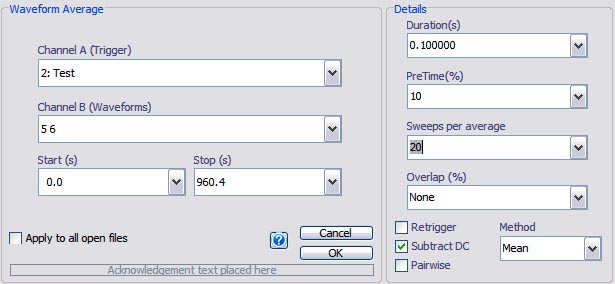
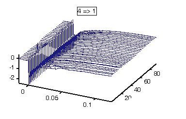

Waveform Average & Spike-triggered averaging
Email: sigtool@kcl.ac.uk

Email: sigtool@kcl.ac.uk
Author: Malcolm Lidierth
Updated: October 2009
Performs averaging of waveform data about a specified trigger.
With the Neuroscience Toolkit, a Spike-Triggered Average is available. This is identical to the standard waveform average except that Retrigger is set by default and overlapped averaging is not supported

Channel A (Trigger)
Select one or more channels to use as the trigger. Event and episodically sampled waveform channels can both serve as trigger channels. If a waveform channel is used for triggering and it does not contain explicit trigger times, the start of sampling will be used.
If Event/Epoch Filtering is active, only valid triggers will be used in the averaging process.
Channel B (Waveforms)
Select one or more waveform channels to average. Both continuous and episodically sampled waveforms may be selected. With episodic data, note that only valid epochs will contribute to the average. Ordinarily, Event Filtering should be applied to the trigger channels (as above) rather than to the waveform channels.
Note that, for multiplexed data, waveform averaging respects the Current Subchannel setting for each waveform channel. Only data on the relevant channel will be averaged.
If the Pairwise checkbox is selected (see below) Channel A and Channel B lists should contain equal numbers of channels. Each trigger channel will be paired with the corresponding source channel and only those averages will be displayed. E.g. 1, 5, 3 in Channel A, and 10, 14, 11 in Channel B will average channel 10 with respect to the trigger on channel 1; 14 with respect to 5 and 11 with respect to 3.
Start & Stop
Only data between the specified times will be processed.
Duration & PreTime
These set the time over which the average will be calculated and the pre-stimulus time as a percentage of the duration. When the Channel B selection is made, a suggested duration will appear in in the Duration box calculated from the first trigger channel selected in Channel A and the waveforms channels in Channel B. Subsequently, the duration will be calculated individually for each trigger/waveform pair as the averages are formed. If the user-set duration exceeds the maximum possible, the duration for that channel pair will be reduced accordingly.
Note that if a waveform channel is used as the trigger and it does not contain explicit trigger times the start of sampling for each epoch will be used as the trigger. It follows, that no pre-time data will be available for that channel (or others sampled synchronously with it).
Sweeps per Average
Select 'All' to calculate a single average over the period Start to Stop. Otherwise, select the number of sweeps to include in each average to compute multiple averages for each trigger/waveform pair.

Example of multiple averages displayed here as a 'Waterfall' in the sigTOOL result window.
Overlap
Multiple averages can be overlapped by setting Overlap to a non-zero value. Overlap is set as a percentage e.g., with Sweeps per Average set to 10 and Overlap set to 50% averages will be that formed from trigger numbers 1 through 10, then 5 through 15, then 10 through 20 etc.
You can selected mean (default) or median averaging. With a mean, error bars will be standard deviations. With medians they will be 25% and 75% percentiles (N.B. this requires the optional MATLAB toolbox prctile function to be present on your PC).
If this checkbox is set, all triggers will be used - including those that fall within the sweep-time of the preceding trigger(s).
If the box is not checked, triggers that fall within the sweep-time of an earlier sweep will be rejected. This can be used, for example, to 'debounce' trigger channels where trains of stimuli were delivered.
The average (either mean or median) of the pretrigger values will be subtracted from the trace
Enables pairwise averaging of the trigger and source channels as described above.
© The Author and King's College London, 2007-